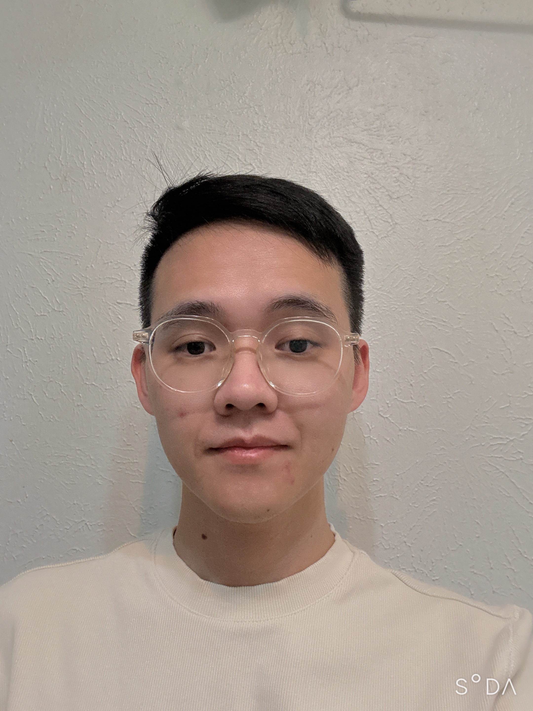

University of North Texas
PhD in Electrical Engineering
Embedded Systems • Wireless Sensing • Applied ML
PhD student in Electrical Engineering focused on wearable embedded devices, wireless sensing systems, RF energy harvesting, and machine learning for signal processing.

About
I am a graduate researcher with a strong background in wearable embedded devices for both human and animal models. My work combines hardware prototyping, firmware development, wireless sensing, and machine learning to build practical monitoring systems. I have hands-on experience designing and debugging sensing platforms, multi-layer PCBs, and RF energy harvesting systems, with a growing focus on intelligent sensing for agriculture and underwater environments.
Education
PhD in Electrical Engineering
M.S. in Electrical Computer Engineering • GPA: 4.12/4.5
Engineer in Electrical Engineering • Talent Program of Automatic Control • GPA: 3.23/4.0 (Top 15%)
Skills
C/C++, MATLAB, Python
STM32CubeIDE, Arm Keil MDK, Altium Designer, Git
I2C, SPI, UART, JTAG, BLE, STM32, nRF52, ARM Cortex-M4
Oscilloscope, impedance analyser, logic analyser, soldering station
Experience
Advisor: Prof. Xinrong Li
Advisor: Prof. Wan-Young Chung
Projects
Integrated sensors, controls, and ecotoxicology with decoupled aquaponics using brackish groundwater and desalination concentrate for sustainable food production.
USDA + NSFDeveloped a wearable sensing prototype with RF energy harvesting and deep learning models for classifying cow behaviors. Evaluated energy harvesting capacity and real-world device operation experimentally.
Smart AgricultureBuilt a battery-free food monitoring system powered by 915 MHz RF energy harvesting to estimate food freshness using pH, TVOC concentration, and package pressure data.
Battery-Free SensingPublications
Recognition
Reviewed 41 times for 9 journals, including:
Contact
Email: dth22298@gmail.com
Phone: (+1) 773-461-7502
GitHub: hadt222
LinkedIn: https://www.linkedin.com/in/thaiha98/